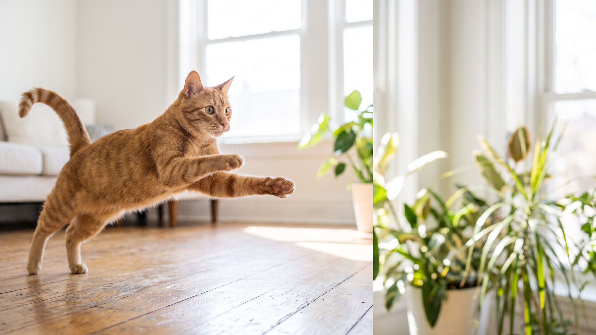

Для дома с кошкой подходят хлорофитум, калатея, маранта, пеперомия, хамедорея и фаленопсис: эти растения считаются нетоксичными для кошек. Лилии, диффенбахию и другие опасные виды лучше не заносить в квартиру даже на высокой полке. Ниже список ботанических названий и чек-лист размещения горшков, грунта и удобрений.
🐾 Чтобы уход не держать в голове
AnimaLife напомнит, когда стричь когти, вычёсывать, купать и обрабатывать от паразитов, и заведёт дневник по вашему питомцу. Бесплатно.
Настроить напоминания → Настроить в MAX →
У вас iPhone? AnimaLife есть в App Store
Нетоксичность означает отсутствие известного токсического действия самого растения. Она не делает листья кормом и не приносит пользы при поедании в большом количестве. Безопасный вид тоже ограничивают в доступе. Если кошка постоянно обгрызает один горшок, уберите его из комнаты и предложите отдельную кошачью траву.
Лилии Lilium spp. и лилейники Hemerocallis spp. особенно опасны для кошек. Не оставляйте дома горшки и букеты с этими растениями. Учитывайте также пыльцу и воду из вазы: кошка может контактировать с ними, даже если не жуёт лист.
Высокая полка не решает задачу: кошка способна запрыгнуть на мебель, сбросить горшок или найти опавший лист. Если опасное растение уже стоит дома, перенесите его туда, где животное совсем не бывает, либо отдайте в дом без кошек. Уберите с поверхности листья и остатки грунта.
Перед покупкой сфотографируйте этикетку и найдите род и вид латинскими буквами. Одно бытовое имя могут давать разным растениям, поэтому слов «пальма» или «лилия» для проверки мало. Сверьте полное название с актуальным ветеринарным справочником токсичных растений. Если продавец назвал только сорт, уточните ботанический род до оплаты.
Горшок ставьте на широкую устойчивую подставку вдали от края полки. Отдельно вырастите кошачью траву в контейнере, который кошке разрешено обследовать. Не переносите её в общий горшок с декоративным растением: так проще контролировать грунт и уход.
Дренажная вода остаётся вне досягаемости. В ней могут оказаться вещества после подкормки. После полива выливайте лишнюю воду там, где кошка не сможет её лизнуть. Гранулы удобрения не оставляйте на поверхности грунта.
Если кошка съела часть опасного растения либо контактировала с лилией или лилейником, свяжитесь с ветеринарной клиникой сразу, не дожидаясь изменений в поведении. Сохраните фотографию растения, его точное название и этикетку. Сообщите врачу, какая часть могла быть съедена и когда это произошло. Действуйте по указаниям клиники.
Материал носит информационный характер и не заменяет очную консультацию ветеринара.
🐾 Заведите дневник ухода за питомцем
Вес, шерсть, обработки, прививки — всё в одном месте. А если что-то смущает, AI-ветеринар ответит круглосуточно и бесплатно.
Завести дневник → Завести в MAX →
У вас iPhone? AnimaLife есть в App Store
🐾 Понравился разбор?
Подпишитесь на канал — каждый день разбираем по одному тревожному симптому у кошек и собак: что в пределах нормы, а когда пора к врачу. Подпишитесь, чтобы не пропустить разбор, который может спасти здоровье вашего питомца.